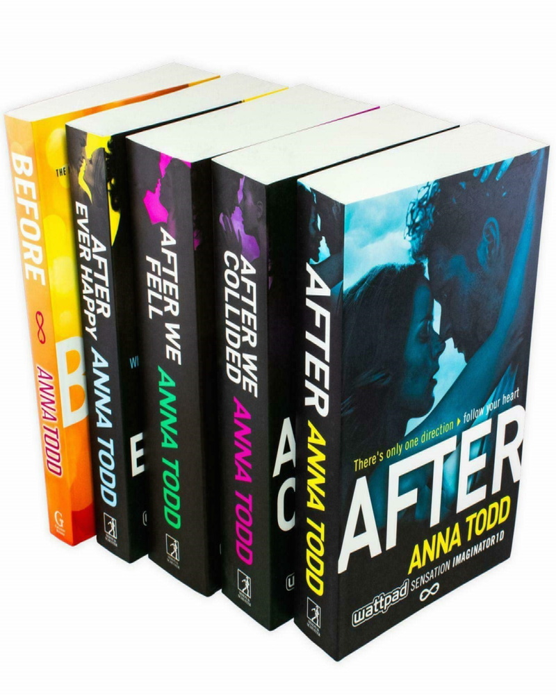

Biografia de Anna todd
Anna Todd nació en Ohio en 1989. Ha figurado en la lista de bestsellers del The New York Times como autora de la Serie After, Sisters. Lazos infinitos y,
más recientemente, la Serie Stars. La Serie After ha sido publicada en más de treinta y cinco idiomas, y ha sido número uno en varias listas internacionales de
bestsellers. Desde entonces, ha escrito ocho novelas más y ha ejercido de guionista y productora en la adaptación cinematográfica de After.
En mil pedazos, la secuela de After.
Libros de la autora
After serie
Tessa Young se enfrenta a su primer año en la universidad. Acostumbrada a una vida estable y ordenada, su mundo cambia cuando conoce a Hardin,
el chico malo por excelencia, con tatuajes y de mala vida.
La inocencia, el despertar a la vida, el descubrimiento del sexo… un amor infinito, dos polos opuestos hechos el uno para el otro.
Imagina
Imagina correr por la ciudad esquivando paparazzis con Jennifer Lawrence... Imagina a Justin Bieber organizando una romántica yincana por vuestro
aniversario que cuenta la historia de vuestro amor... Imagina un mundo en el que los selfies están prohibidos y en el que Kim Kardashian se ha convertido
en una defensora de la libertad que necesita tu ayuda para luchar contra las injusticias... ¡Deja volar tu imaginación! Eso es lo que han hecho los autores
de esta antología de relatos en los que aparecen las estrellas que más te gustan, tales como Zayn Malik, Cameron Dallas, Kanye West, Selena Gomez, Dylan O'Brien,
Tom Hardy, Jamie Dornan, Benedict Cumberbatch ¡y muchas más! Anna Todd encabeza esta antología
Landon 1. Todo por ti
Cuando Landon, el mejor amigo de Tessa y hermanastro de Hardin, decide abandonar Washington para ir en busca de aventuras en Nueva York, cree que su vida
no puede ser más perfecta: compartirá apartamento con Tessa; vivirá, por fin, en la misma ciudad que Dakota, su novia desde hace años; conocerá a gente nueva...
Pero el destino a veces es caprichoso y tiene sus propios planes y quizás no todo salga como tenía previsto... Una nueva entrega del Universo AFTER, enriquecida
y con nuevo contenido.
Landon 2. Ahora y siempre
Ahora y siempre:La vida de Landon en Nueva York no está saliendo exactamente como él había imaginado. Tessa sigue triste y encerrada en sí misma por culpa
de Hardin, el trabajo que ha conseguido no es muy excitante y, para rematarlo, Dakota ha vuelto a aparecer en su vida justo cuando empieza a sentir algo por
la preciosa y enigmática Nora. Pero Landon está dispuesto a vencer todos los obstáculos para encontrar su camino y conseguir, por fin, su amor verdadero.
¿Quién ocupará su corazón?
Sisters: Lazos infinitos
«A veces sentía que éramos una fuerza de la naturaleza. En ese momento éramos como un poderoso golpe de viento a punto de destruir una ciudad.
Okay, quizás me ha quedado un poco exagerado, pero sí, las hermanas Spring éramos la fuerza de la naturaleza.»
Beth, Meg, Amy y Jo Spring son hermanas y, aunque son muy distintas entre sí juntas pueden con todo. Acompáñalas y descubre qué esconden sus corazones.

AFTER: la novela gráfica (Volumen Uno)
After se está convirtiendo en una novela gráfica, y Teen Vogue tiene su primer vistazo exclusivo a la adaptación, dirigida por la autora Anna Todd.
Programada para el 22 de marzo de 2022, After: La Novela Gráfica (Volumen Uno) narra el comienzo del emotivo y torbellino romance entre los estudiantes
universitarios Tessa y Hardin